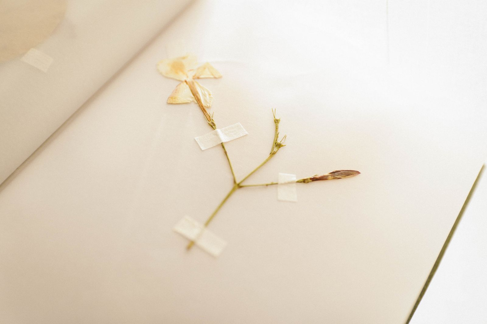

The archive came home first

“The archive came back to us before the university saw its copy — in our language, on paper, with the recordings. That order was written into the contract, and it was kept.”
- Programme
- Home-garden & gathered-plant documentation
- Client
- A university ethnobotany unit, co-commissioned by a community heritage association
- Region
- A highland parish region, northern Portugal — named in the archive, generalised here
- Seasons
- Two — spring & autumn, 2023–24
- Holders recorded
- 31, each consenting per session
- Record
- 214 use-reports · 63 vouchers deposited
- Archive
- Returned to the association first — print, audio & digital; the university holds a licensed copy
- Status
- Complete — the association now extends the archive itself
The brief
The association's oldest knowledge holders were in their eighties, and the parish's plant knowledge — gardens, gathered greens, the winter-coughs repertoire — existed nowhere on paper. The university wanted a research record. The association wanted an archive of its own, and said plainly that it feared the usual order of things: publication first, community copy never.
What was done
The order of delivery was settled in a written agreement before any recording began: the community archive first, the institutional copy licensed, consent revocable by any holder at any time, including after filing. Two seasons of sessions followed — in kitchens and gardens more than anywhere formal — with vouchers collected on walks with the holders themselves. Transcription was done in the community's own language variety first, by paid local transcribers; Portuguese summaries came second. Every holder reviewed their own transcript before it was filed.
The outcome
The complete archive — bound print volumes, a listening copy of every recording, and the catalogued digital files — was handed to the association at a public session in the parish hall. The university received its licensed copy afterwards. The record holds 214 use-reports across nine categories of use; its winter-coughs category is the worked example on The Record (ICF 0.841 — agreement, measured honestly). Four association members have since trained as recorders, and the archive's newest sheets are theirs.